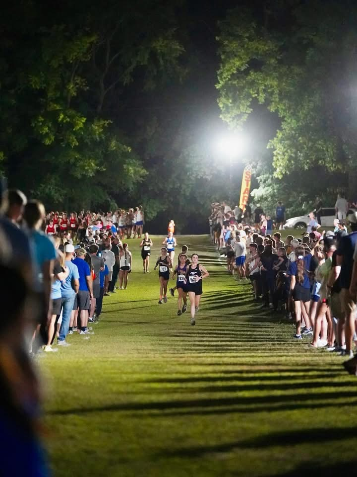
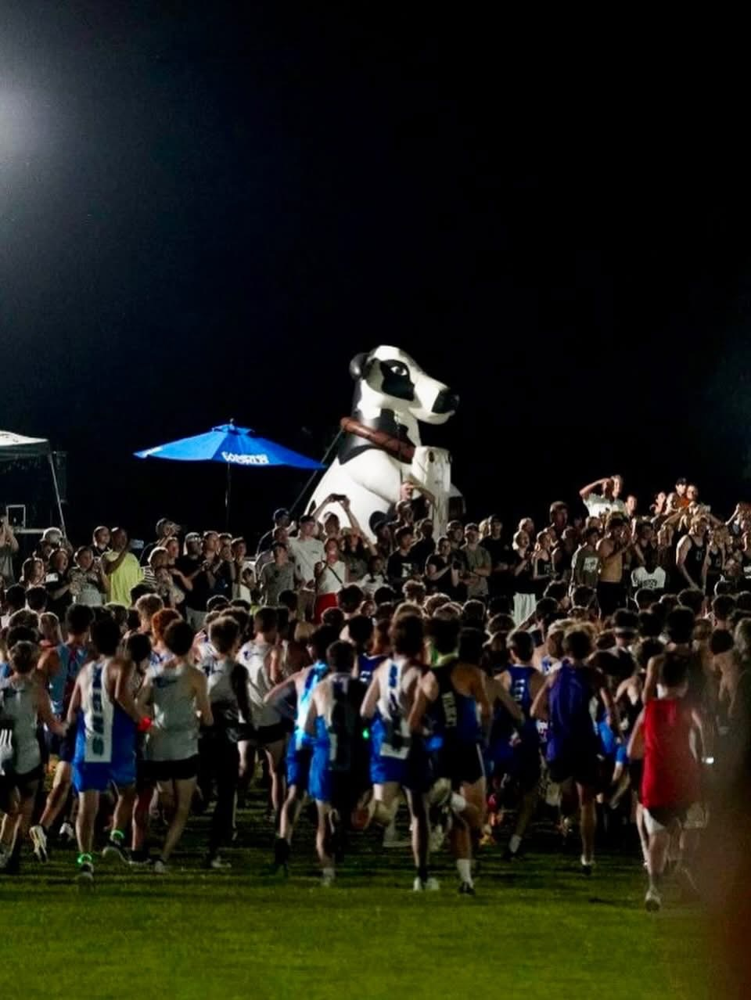
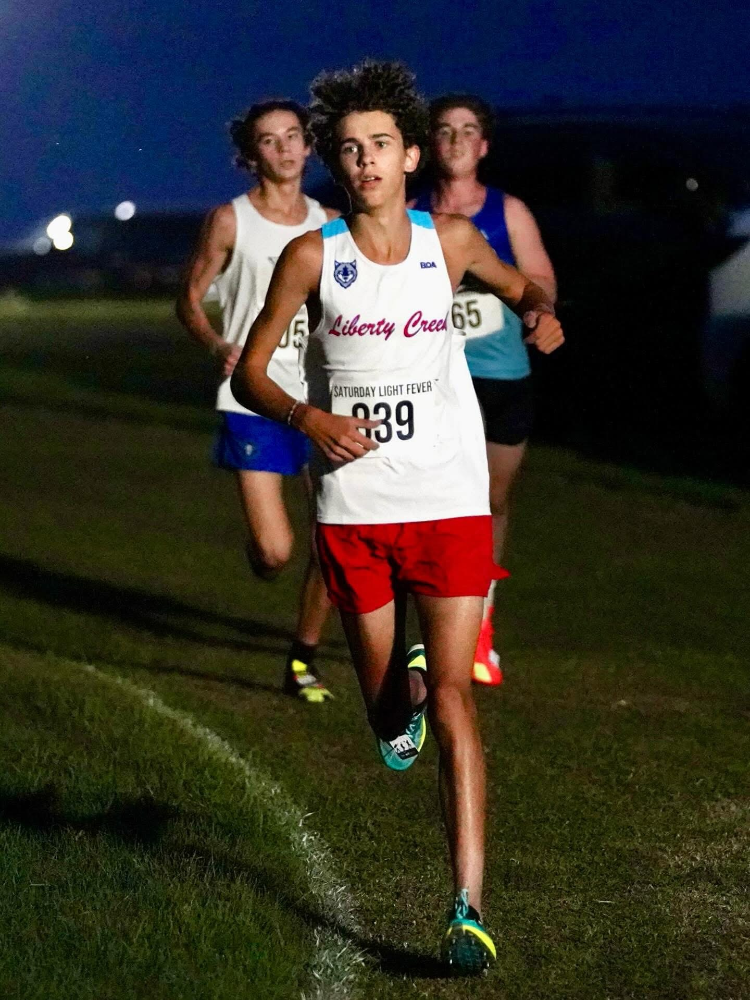
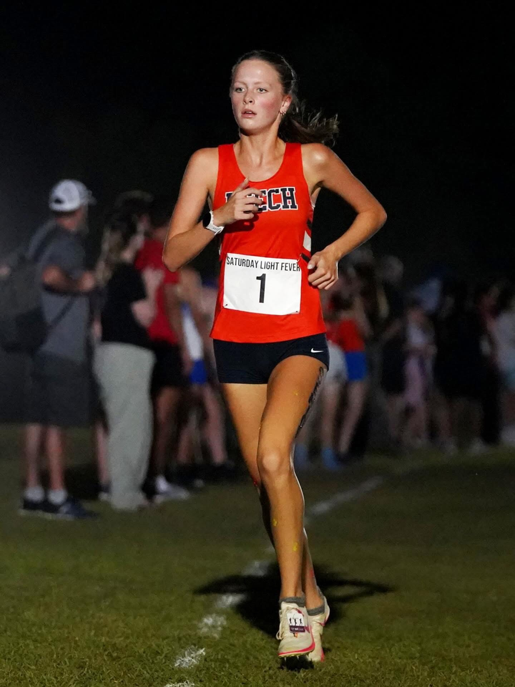
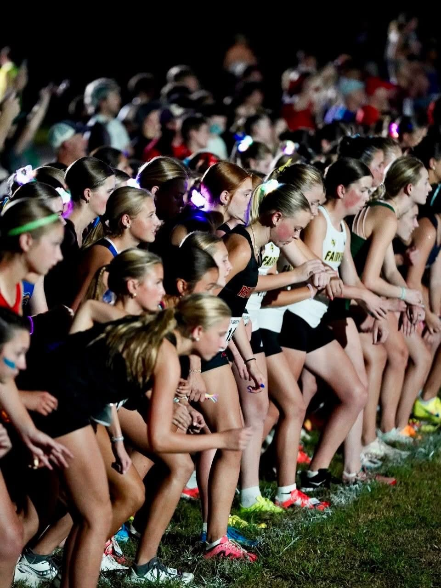
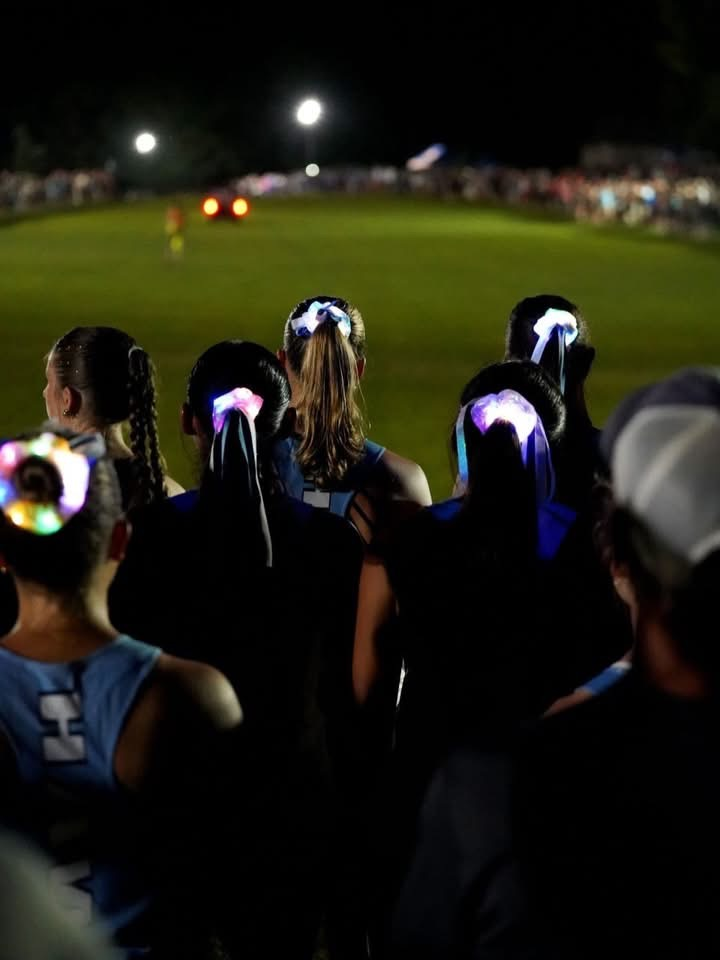

A night cross country meet on the city's lakeside peninsula. Gun goes off at 7:00 p.m.; the last mile is run in the dark. Since 2021 it has drawn 158 schools from 36 Tennessee counties and five states to a park Hendersonville already owned.
Every school that has raced Saturday Light Fever, 2021–2026. Each line runs on the
true compass bearing to that school's home town; its length is the distance.
Dot size is how many years the school has come back.
120+ milesInside 120 miles
2021–2026
At a glance
158Schools that have raced here
7,128Individual athletes
10,280Athlete entries
36Tennessee counties
5States: TN, KY, OH, NC, GA
318Miles from the furthest school
+55%Field growth since 2021
11,900Miles of one-way travel, all schools
1,300Carload tickets sold at the gate
Sanders Ferry has hosted the TSSAA State Cross Country Championships since 2020.
Saturday Light Fever is the August meet where teams from across the state come to learn the
course before November — which is a large part of why the field looks the way it does.
The record
Six years, six editions
Field size by year
Year
Dates
Teams
HS
MS
Entries
Finishers
2021
Oct 9
52
52
—
1,305
1,100*
2022
Oct 1
56
56
—
1,126
917
2023
Aug 18–19
60
36
24
1,890
1,590
2024
Aug 23–24
65
40
25
2,199
1,854
2025
Aug 22–23
58
36
22
1,734
1,522
2026
Aug 21–22
69
42
27
2,026
1,718
* 2021 registration is complete (1,305 entries, 52 teams). Seven of the eight races have been recovered, giving 922 known finishers; the Silver Varsity Boys result is still missing, so the finisher figure is estimated at the 85% average finish rate. There was no separate middle school division in 2021 — middle schoolers ran in the JV Open race.
Two changes between 2022 and 2023 made the meet what it is now. It moved off the
crowded October calendar to opening weekend in August, and it added a middle school
division. That division is now a third of the field, and it is the reason the meet
outgrew a single evening: after traffic backed up on Sanders Ferry in 2023, the meet
split into two nights — middle school Friday, high school Saturday. It has run that way
since.

The course runs between two unbroken walls of people. Nobody sits down at this meet.Photo: MileSplit Tennessee

A mass start on the hill. The crowd gets there early for a place on the bank.Photo: MileSplit Tennessee
2024 was the largest field in meet history — 1,854 runners crossed the line across two nights, more than any year before or since.
The dip in 2025 is not a decline. Capacity, not demand, sets the ceiling.
Entries are capped at 40 high school and 30–40 middle school teams, and in 2024
registration closed early with every race full.
Where they come from
The drive
The median school in the field drives about 36 miles each way. The tail is
what makes this regional rather than local: in 2022, 57% of athletes came from more than
30 miles out, and a third came from more than 150.
Furthest schools in meet history
Miles
School
From
318
Hilliard Davidson High School
Hilliard, Ohio
243
Sullivan East High School
Bluff City, TN
238
Science Hill High School
Johnson City, TN
233
Asheville
Asheville, NC
218
Parkview High School
Lilburn, Georgia
212
Greeneville HS · Towering Oaks Christian
Greeneville, TN
208
Christian Brothers, Lausanne, Hutchison, White Station, Memphis East, St. Louis Catholic
Memphis, TN
198
Houston High School · Houston Middle School
Germantown, TN
Add up one-way travel for all 158 schools that have entered and you get about 11,900 miles — more than a round trip across the continental United States, all of it ending at a park in Hendersonville.
Sumner County on its own course
Nineteen local programs have raced here: Beech, Station Camp (HS and MS),
Hendersonville, Gallatin, Portland, Westmoreland, Liberty Creek (HS and MS), Merrol Hyde
Magnet, Pope John Paul II Prep, T.W. Hunter, Knox Doss at Drakes Creek, Robert Ellis,
Shafer, Hawkins, White House HS, White House Middle/Elementary, and Heritage.
Five schools have entered all six years, 2021 through 2026: Beech,
Station Camp, Merrol Hyde Magnet, Portland and St. Cecilia Academy.
Beech hosts the meet; the other four have simply never missed it.
The times
Fast company
This is not a low-key season opener. Runners come here to run fast on the
state championship course, and the clock shows it.

Leading with a mile to go, in the dark.Photo: MileSplit Tennessee

Coming through the crowd on the home stretch.Photo: MileSplit TennesseeQuieting the crowd on the way in.Photo: MileSplit Tennessee
In 2022 Connor Ackley of Hilliard Davidson, Ohio, won the boys varsity 5K in 14:45.6 — still the fastest time ever run at this meet. Two other runners broke 15:10 in the same race. The winning time in the inaugural 2021 edition was 15:31.00.
A national-caliber field on a Hendersonville park course
Fastest high school 5,000m — boys
Time
Athlete
School
Year
14:45.6
Connor Ackley
Hilliard Davidson (OH)
2022
14:53.7
Keegan Smith
Knoxville Catholic
2022
15:01.9
Owen Clemons
Cleveland
2022
15:22.30
Tommy Babbit
Maryville
2026
15:23.50
Keegan Smith
Knoxville Catholic
2024
Fastest high school 5,000m — girls
Time
Athlete
School
Year
17:30.55
Lauren Banovac
Brentwood
2025
17:35.55
Lakin Hailey
Rockvale
2025
17:44.55
Leila Hailey
Rockvale
2025
17:48.70
Kyra Hayes
Siegel
2021
17:54.88
Larkin Johnson
Centennial
2025
Fastest middle school two-mile
Time
Athlete
School
Year
Boys
10:16.38
Jackson Oliver
Knox Doss at Drakes Creek
2025
Boys
10:27.32
Ryder Chatman
Woodland
2025
Boys
10:28.70
Jackson Oliver
Knox Doss at Drakes Creek
2024
Boys
10:28.75
Ethan Reyes
The Webb School
2024
Girls
12:03.86
Ireland Jameson
Spring Station
2026
Girls
12:07.71
Maya Lang
West Collierville
2024
Girls
12:15.79
Ruby Miller
Woodland
2026
The closest finish in meet history came in the 2024 middle school varsity boys race. Jackson Oliver took it in 10:28.70; Ethan Reyes of The Webb School was five hundredths of a second behind.
Both are still top-five all time on this course
The fastest middle school boys two-mile ever run at this meet belongs to Jackson Oliver of Knox Doss at Drakes Creek — a Hendersonville school, on a Hendersonville course.
10:16.38 · 2025
Varsity champions
Year
High school boys 5K
High school girls 5K
2021
Landen McNair, Bartlett 15:31.00
Kyra Hayes, Siegel 17:48.70
2022
Connor Ackley, Hilliard Davidson 14:45.6
Meriel Rowland, Hutchison 18:23.7
2023
Tate Vinson, Rockvale 15:58.1
Maddie Archdale, Hardin Valley 18:09.8
2024
Keegan Smith, Knoxville Catholic 15:23.50
Leila Hailey, Rockvale 18:31.99
2025
Kehler Vaughn, Brentwood 15:50.70
Lauren Banovac, Brentwood 17:30.55
2026
Tommy Babbit, Maryville 15:22.30
Lydia Brunner, Father Ryan 18:22.70
Middle school varsity champions
Year
Boys two-mile
Girls two-mile
2023
Avery Young, Northeast 11:04.7
Kinslee Cox, Siegel 12:38.2
2024
Jackson Oliver, Knox Doss 10:28.70
Maya Lang, West Collierville 12:07.71
2025
Jackson Oliver, Knox Doss 10:16.38
Nora Campbell, Jonathan Edwards 12:20.83
2026
Dylan Acton, Houston 10:34.70
Ireland Jameson, Spring Station 12:03.86
The first edition still holds up. Kyra Hayes of Siegel won the 2021 Gold varsity girls race in 17:48.70 — six years on, still the fourth-fastest girls time ever run at this meet, with runner-up Bella Guillamondegui of Harpeth Hall (18:06.90) sixth. Landen McNair of Bartlett took the Gold varsity boys 5K in 15:31.00, and Auldyn Plant of University School of Nashville won the Silver varsity girls race in 19:12.70. Seven of the eight 2021 races have been recovered; the Silver varsity boys result is still missing.
The part that takes years
They come back and they get faster
Because the meet has run on the same course every year, it accidentally
keeps a record of kids growing up. Match the names across years and a pattern falls out:
of the runners who have raced here more than once, 72% came back faster. The
typical returner takes about 78 seconds off their time on this course.
Runners who have raced here more than once
Race
Returners
Came back faster
Median improvement
High school 5,000m
694
67%
1:18
Middle school 2 mile
273
85%
1:17
These figures come from the searchable archive, which currently indexes 2022, 2023, 2025 and
2026. 2021 and 2024 are not yet in it, so the returner counts understate the real totals and
the 2023–2025 gap hides a year of everyone’s progression.
The middle school number is the striking one. Nearly every middle schooler who comes
back runs faster than they did the year before — which is what you would hope a first
race under the lights does to a twelve-year-old.
Jackson Oliver first ran here in 2023 as a sixth grader with no team listed beside his name. He finished 248th in 18:49.
What happened next
Jackson Oliver — four straight years on the same course
Year
Grade
School
Race
Time
Result
2023
6th
—
2 mile
18:49.2
248th
2024
7th
Knox Doss at Drakes Creek
2 mile
10:28.70
Won it
2025
8th
Knox Doss at Drakes Creek
2 mile
10:16.38
Won it — fastest ever run here
2026
9th
Liberty Creek High School
5,000m
16:13.70
12th, varsity
Both of those schools are in Sumner County. A Hendersonville kid entered this race at
the back of the field and, three years later, held the course record on a park his own
city owns. There is no line item for that, but it is the reason the meet is worth keeping.
Cross country doesn't sell reserved seats, so the money runs through
restaurants, gas stations, hotels and stores rather than a gate. But this meet does sell
per-carload admission — which gives us a measured number instead of a guess.
The meet sells 1,000–1,300 carload tickets. At 1.8–2.5 people on site per runner, that is 2.4–4.3 people per vehicle — two independent counts, one measured at the gate and one estimated in the crowd, agreeing with each other.
Everything below is built on those two numbers
Estimated direct visitor spending in Hendersonville
Year
Finishers
People on site
Carload tickets
From 30+ mi
Room-nights
Direct spending
2021
~1,100
2,000–2,750
~640–830
770–1,070
~45
$19k–$41k
2022
917
1,650–2,300
~530–690
940–1,300
~145
$34k–$64k
2023
1,590
2,900–4,000
~925–1,200
1,160–1,610
~35
$25k–$57k
2024
1,854
3,300–4,600
~1,080–1,400
1,630–2,260
~100
$41k–$88k
2025
1,522
2,700–3,800
~885–1,150
1,210–1,680
~50
$28k–$62k
2026
1,718
3,100–4,300
1,000–1,300
1,210–1,680
~105
$34k–$70k
Total
8,700
~480
$182k–$382k
Only the 2026 carload figure is measured; other years are scaled from it by field size.
Finisher counts are actual except 2021, which is estimated (see the note above).
Assumptions — adjust these as you see fit
People on site: 1.8–2.5 per runner, including the runners. This is the meet organizers' own figure, and it is consistent with the carload count.
Day-trip spending of $18–$32 per visiting person — meals, fuel, snacks, retail. Assumes most people eat one meal and buy gas.
Lodging only for teams traveling 150+ miles: three athletes per room plus two staff rooms per team, at $120–$155 a night.
Local attendees inside 30 miles are counted as on site but contribute zero new spending — their money stays in the county either way. Only 39–57% of the crowd counts as visiting.
No multiplier applied. These are direct dollars only. A standard economic-impact study would add indirect and induced effects on top, typically 1.5–2.0×.
Carload tickets are read as a weekend total. If 1,000–1,300 vehicles is a per-night figure, every attendance and spending number here roughly doubles.
Not counted: the meet's own admission revenue (roughly $5,000–$6,500 a year at $5 a car, which stays with the host school), operating spend with local vendors, or a weekend of statewide media coverage naming Hendersonville.
For scale: Tennessee tourism reported a record $32.5 billion in direct visitor
spending in 2025, and overnight sports travelers nationally averaged $371 per person per
trip. Saturday Light Fever is small by those standards. But it recurs, it grows, it costs
the city very little, and it happens on land the city already owns.
The part that isn't dollars
What else it does

Glow gear on the start line. The meet supplies the dark; the runners supply the rest.Photo: MileSplit Tennessee

Teammates watching a race go by. This is what a 7:00 p.m. start buys you.Photo: MileSplit Tennessee
It fills the park with 3,000–4,300 people across two August nights — 1,000 to 1,300 paid carloads — without a single permanent structure being built.
It shows Sanders Ferry to every serious cross country program in Tennessee three months before those same teams return for the state championship. Hendersonville is the venue they measure themselves against.
It gives Sumner County kids a home course on a statewide stage. Nineteen local programs have raced here, in front of their own families, on their own park.
It is a night race, and that is rare. Cross country is a morning sport almost everywhere. A 7:00 p.m. start on a lakeside peninsula is why coaches drive five hours from Memphis and Johnson City for an August opener.
It has grown 80% in five years and has been capped, not marketed. Demand already exceeds capacity.
Show your work
Data and gaps
Every figure here is computed from the meet's own registration exports and results
files, covering all six years. Summary data is published alongside this page so the
numbers can be checked: year summary and
all 158 schools with home city, county, distance and
years attended.
Each year's results were matched against that year's registration export by athlete
name before being used, so every year's data is confirmed to belong to that year rather
than trusted from a filename.
Gaps you should know about before quoting this
One 2021 race is missing. Seven of the eight races run that night were recovered, giving 922 known finishers. The Silver Varsity Boys result has not been found, so the 2021 finisher count is estimated at the 85% average finish rate. 2021 registration is complete, so every other 2021 figure — entries, teams, schools, travel — is actual.
Only the 2026 carload count is measured. Earlier years are scaled from it by field size, so the attendance and spending columns for 2021–2025 are estimates built on one real observation.
Distances are straight-line from the park to each school's home town, so real driving miles are 15–25% higher. The travel figures are conservative.
School names are normalized — "St. Matthew" and "St. Matthew Catholic School" count once.
Entries are what teams submitted; finishers are who crossed the line. The gap is normal.